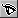

2007年01月25日
スパイダー・ビューファインダ
もくじ：
SPIDAR-G を仮想的に表示するビューファインダです。
フレームや糸も表示されますので、実際に SPIDAR-G を動かして動作確認するのに便利です。
SPIDAR-G と接続していないときは、マウスでグリップの位置を移動できます。
チャートを開くには、HaptiChemランチャーの「Tools」->「Spidar Viewfinder」メニューを選択します。
画面説明
スパイダー・ビューファインダの画面は以下のようになっています。
- 1 : ピックボタン
- 2 : グラブボタン
- 3 : ドラッグボタン
- 4 : フォーカスボタン
- 5 : Ｚホィール
- 6 :
 キャリブレーションボタン
キャリブレーションボタン
- 7 :  視覚ボタン
- 8 :
 力覚ボタン
力覚ボタン
詳細は「共通操作」を参照してください。
- A : 軸
- B : 境界箱
- C : フレーム
- D : グリップ
- E : 影
- F : 糸
ウィンドウの上部にあるメニューです。
ビューアに表示されている状態の画像ファイルを作成します。
デフォルトのファイル名は、[年月日時分秒].jpgです。
保存される画像のサンプル
ウィンドウを閉じます。
このウィンドウに関連した、ゲージのウィンドウも同時に閉じます。
軸の表示／非表示の設定をします。
X軸, Y軸, Z軸の方向が分かります。
境界箱の表示／非表示の設定をします。
SPIDAR-G でグリップを動かすことのできる範囲です。
フレームの表示／非表示の設定をします。
SPIDAR-G のフレームがどのあたりにあるのかが分かります。
グリップの表示／非表示の設定をします。
グリップは、自分が操作して、位置を移動することのできるオブジェクトです。
影の表示／非表示の設定をします。
グリップの位置が、境界箱の面上に影として表示されます。
糸の表示／非表示の設定をします。
SPIDAR-G の糸がどのあたりにあるのかが分かります。
ビューア内に表示しているものの全体が見られます。
スパイダー・ゲージのウィンドウを開きます。
詳細は「スパイダー・ゲージ」を参照してください。
スパイダー・ビューファインダでは、中心に向かう力が提示されるようになっています。
スパイダー・ビューファインダでグリップの位置を移動させると、中心から離れた距離と同じ程度、提示する力覚の並進力がかかるのが分かります。
基本説明、メニュー等の説明が記述してある取扱説明書 (このページ)をブラウザで開きます。
このメニューは、ランタイム版では選択することができません。
開発時にプログラムの状態などを確認するためのメニューです。
選択可能な場合は、インスペクタが開きます。

{kind=link}
{kind=link}
{kind=link}
{kind=link}
{kind=link}
{kind=link}
{kind=link}
{kind=link}
{kind=link}
{kind=link}